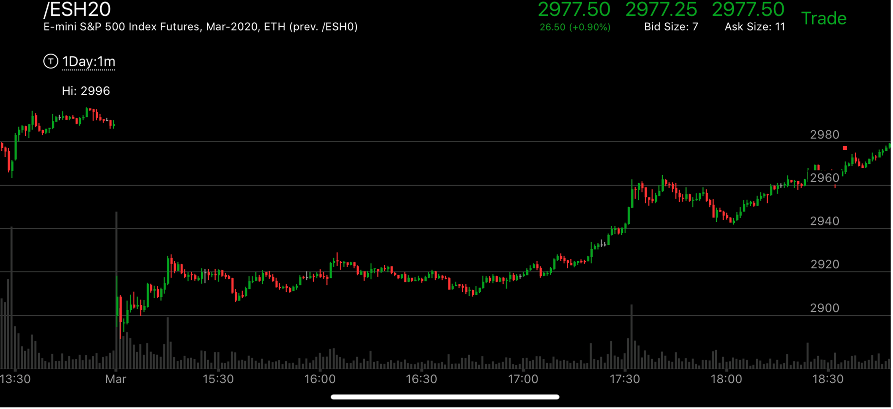
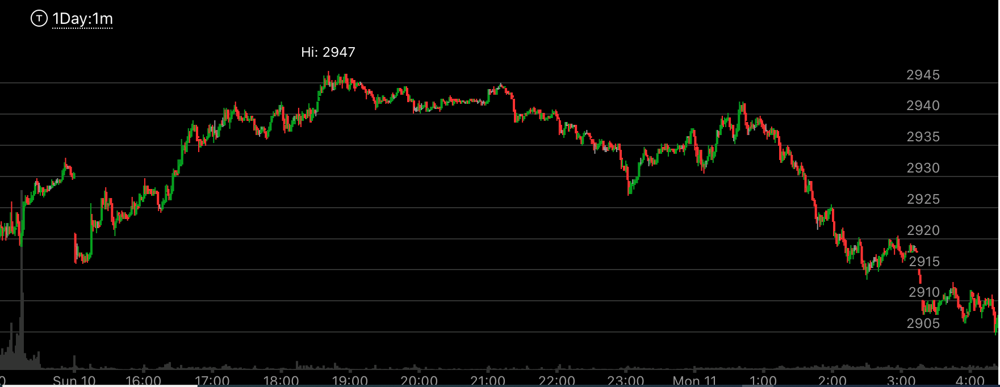
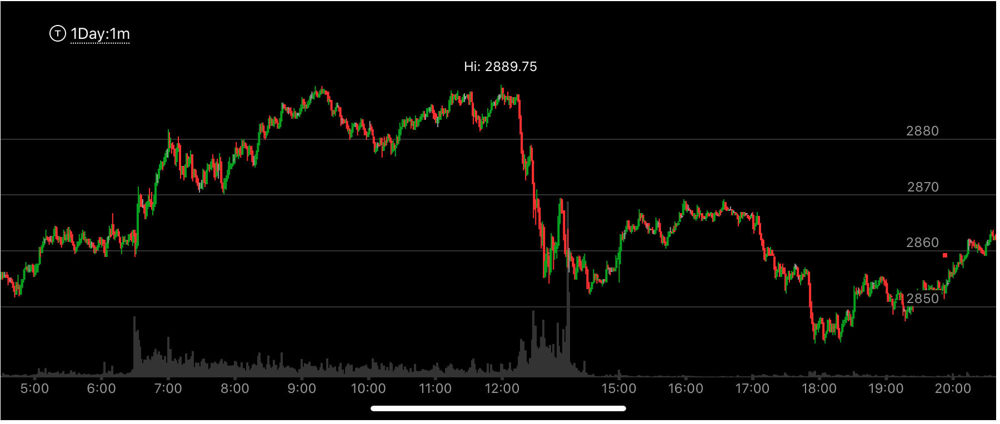
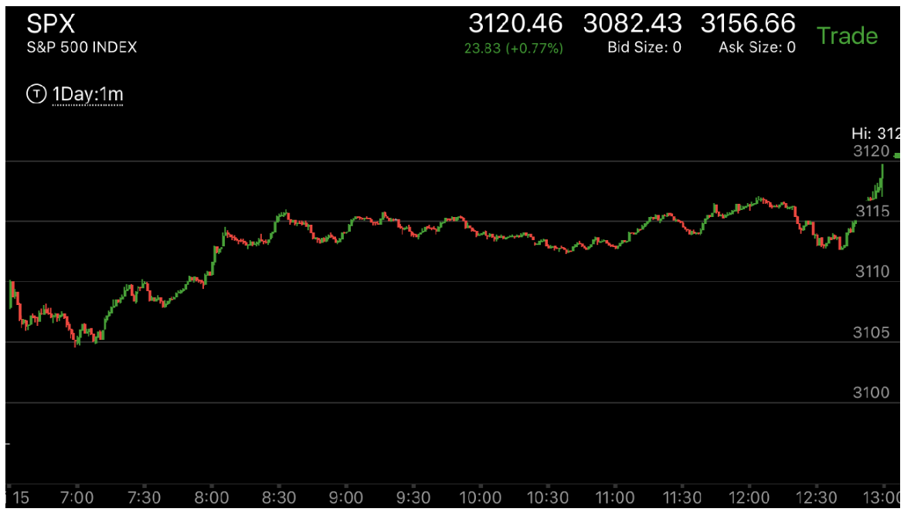
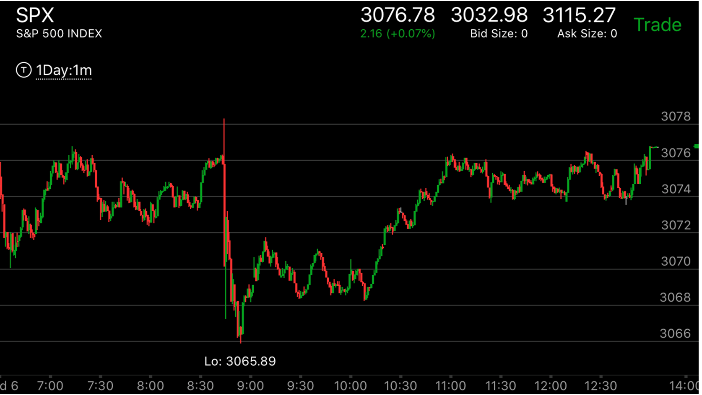

极点附近震荡造成的反转
- 如果走势创新极点，而且积累了一定的幅度，那么它长时间的震荡，会形成反转，震荡时间长于前一次创新极点的时候的时间
- 根据反直觉原理，上涨的震荡走势，每次高点都比前面的点弱。或者反弹比前面更弱，而下跌正好相反。
- 一个要大跌的走势，在上涨时候，很快就出现了反转走势，但是它不反转，反而在高处长时间徘徊，形成了叠加走势，最后大跌。
- 牛市当中，它的下跌走势总是准备时间很短，就越过了前面的点。而熊市当中。它的上涨走势准备时间很短。
- 如果一个走势在高处停留时间很长，低处总是碰一下就反弹，那么它处于跌势。在低处停留时间很长，则相反。
- 但是如果更大的走势是升势，那么可能出现在高处停留时间很长，也会上涨的局面，跌势则相反。

图示：这个走势处于升势。可以看到它的震荡时间在15：到17：00大部分处于高处，似乎是个跌势，
但是由于更大走势的影响，它在震荡后，创新高后，继续大涨。

图示：周日低开后，不断走高，创新高，越过前一周的极点。它在17：00新高的震荡时间，要比
18：10的震荡时间要短。虽然18：10这个新极点幅度不大，但是还是要比前面创新极点幅度要大，而且在高处停留的时间很久，一直没有越过2940这个低点。
一旦越过，造成了大盘的彻底反转或大幅回调。

图示：12:00大幅快速回调。它在底部停留时间不长，在15：00反弹了。可以看出，它在286x震荡的时间，
远远高于在285x震荡的时间。而它才刚刚回调，所以不太可能这么短再次创新高。所以它就在18：00大跌了。形成相对弱势后，才再次反弹。

图示：8:30它创新高后，开始三个小时的震荡。可以观察它的情况，它在高点停留时间很短，
而在低点停留时间很长。特别是9：20它本来在高点停留很久，结果来了一个冲高，立刻下跌。这样又变成在高点停留很短了。
这种态势，就表示了，它处于升势，所以要用反直觉的方法来长时间处于低处。
图示：8:30它创新高后，开始三个小时的震荡。可以观察它的情况，它在高点停留时间很短，
而在低点停留时间很长。特别是9：20它本来在高点停留很久，结果来了一个冲高，立刻下跌。这样又变成在高点停留很短了。
这种态势，就表示了，它处于升势，所以要用反直觉的方法来长时间处于低处。

图示：开盘后快速下跌，然后上涨反弹，它上涨后第一浪快速拉回，然后继续上涨，最后一浪幅度很大，然后在高位走平。这样其实已经反转了。但是它没有立刻反转，
而是震荡很久，观察它震荡的时候，它在高处停留时间长，而在低位停留时间短，最后才8：30快速下跌形成最后一浪下跌。它下跌后，它的涨势则完全相反。9：10第一浪，立刻拉回，在低位走平后，
上涨，结果幅度不如前面，就再次拉回，10：00反弹幅度更低。显得很弱。这个说明它要涨。震荡后，它一举越过了前面的震荡高点，然后走平，再次上涨。11：00它走平了。似乎要反转，结果它11：20下跌速度很快，
反而让下跌很快结束了。